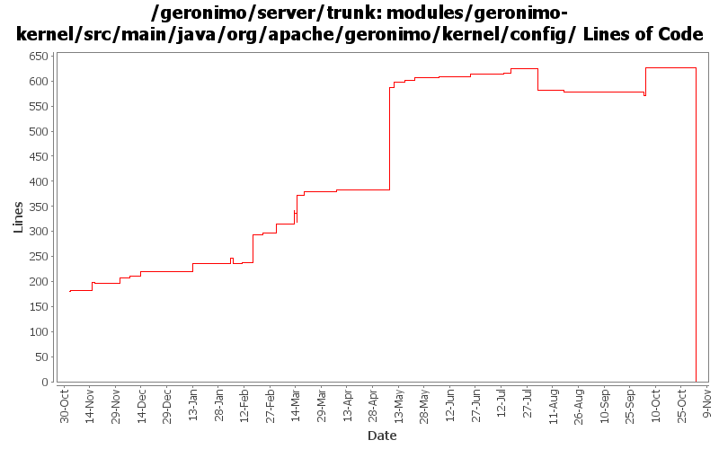

[root]/modules/geronimo-kernel/src/main/java/org/apache/geronimo/kernel/config
 xstream
(0 files, 0 lines)
xstream
(0 files, 0 lines)

| Author | Changes | Lines of Code | Lines per Change |
|---|---|---|---|
| Totals | 166 (100.0%) | 859 (100.0%) | 5.1 |
| djencks | 25 (15.1%) | 319 (37.1%) | 12.7 |
| hogstrom | 5 (3.0%) | 269 (31.3%) | 53.8 |
| gdamour | 8 (4.8%) | 121 (14.1%) | 15.1 |
| dwoods | 7 (4.2%) | 81 (9.4%) | 11.5 |
| kevan | 69 (41.6%) | 28 (3.3%) | 0.4 |
| ccardona | 4 (2.4%) | 19 (2.2%) | 4.7 |
| vamsic007 | 6 (3.6%) | 13 (1.5%) | 2.1 |
| jlaskowski | 1 (0.6%) | 6 (0.7%) | 6.0 |
| rickmcguire | 3 (1.8%) | 3 (0.3%) | 1.0 |
| prasad | 38 (22.9%) | 0 (0.0%) | 0.0 |
GERONIMO-3565. Modules distributed amongst framework/modules and plugins
0 lines of code changed in 38 files:
GERONIMO-3489 Deployment problems caused by file deletion failures
57 lines of code changed in 1 file:
GERONIMO-3496 assemble servers out of plugins
9 lines of code changed in 1 file:
GERONIMO-3415 Make artifact aliasing work for fully resolved artifacts
38 lines of code changed in 1 file:
GERONIMO-3416, start on moving common bits of deployment test infrastructure into kernel test jar. Might also fix GERONMO-3415
21 lines of code changed in 3 files:
GERONIMO-3317 'has not been enhanced' error when invoking an EJB 2.1 Entity Bean. Verified that TCK stillpassed with this minor change. Thanks for the patch YunFeng
2 lines of code changed in 1 file:
GERONIMO-3369 Check for hidden resources before checking parent ClassLoaders
10 lines of code changed in 1 file:
GERONIMO-3269 configuration overrides to connectors are lost if they are stopped outside of a server shutdown
11 lines of code changed in 2 files:
GERONIMO-3318 LocalAttributeManager unable to save updates to LoginModuleControlFlag attribute
o Added a ClassLoader parameter to setValue() and addGBean() methods in ManageableAttributeStore interface
o Added a ClassLoader parameter to GBeanOverride.getAsText() so that the configuration's classLoader could be used to find PropertyEditor
o GBeanInstance.updateManageableAttribute() now uses the configuration's classLoader with ManageableAttributeStore.setValue() call
5 lines of code changed in 2 files:
Quiet down logging of dependency resolution
9 lines of code changed in 1 file:
GERONIMO-3246 Cleanup exception handling so stack traces for first failures are not discarded.
3 lines of code changed in 3 files:
GERONIMO-3212 - Module config can not be removed from config.xml when undeploy offline
3 lines of code changed in 1 file:
GERONIMO-3183 Fix offline deployment in minimal configurations. Applied the second-half of the patch, which adds some improved diagnostics. Offline deployment still fails in the minimal assemblies....
6 lines of code changed in 1 file:
GERONIMO-3132 GERONIMO-3165. Fix a bunch of stuff with locating persistence.xml and persistence unit jars. Hook up with openejb for extended persistence contexts
6 lines of code changed in 1 file:
Modified ClassLoader behaviour to only use JarFile ClassLoader if specifically requested. If not specifically requested we'll only use it on Windows for now given the slight performance penalty.
13 lines of code changed in 1 file:
Modified ClassLoader behaviour to optimize search process for requested classes. This patch ensures that a ClassLoader in the multi-parent hierarchy is searched only once per load request.
206 lines of code changed in 1 file:
GERONIMO-3016 Server assemblies fail to start on Windows when there is a space in the path. Verified this fixes the startup failure on WinXP and verified it doesn't break Linux. Frank, thanks for the patch.
2 lines of code changed in 1 file:
GERONIMO-3071 log the configurations the app client starts using the monitor designed for the purpose
3 lines of code changed in 2 files:
GERONIMO-3070 only generate web app dependencies onto stuff in the current ear, not all the parents
1 lines of code changed in 1 file:
GERONIMO-2982 Prepend / to path url patterns in servlet mappings if missing. Also some much bigger changes to improve info in exception messages and some genericization
17 lines of code changed in 1 file:
GERONIMO-2693 eliminate most duplicate entries from getResources. This should also produce only normailized urls. This should make jetty start quickly
105 lines of code changed in 2 files:
Partial genericization
82 lines of code changed in 2 files:
Removing unused left over variable parentHierarchy
0 lines of code changed in 1 file:
Added additional diagnostic information that will allow the dependency chain to be visible for quicker problem diagnosis for build related issues.
32 lines of code changed in 1 file:
shutdown.jar now boots a kernel with a boot configuration defining boot
dependencies, a la deployer.jar, such that dependencies can be loaded
from the boot repository and no more from lib.
This fixes GERONIMO-2912 - Server can not be shutdown using bin\shutdown.
23 lines of code changed in 2 files:
Provide a bit more info if a module won't load
5 lines of code changed in 1 file:
Second attempt to change the way the online/offline deployers and the JSR88
deployment driver work. The first attempt was breaking the TCK amd the
eclipse plugin.
Online deployer, i.e. deployer.jar, boots a Kernel to load its dependencies,
e.g. geronimo-deploy-tool, and registers the available ModuleConfigurers with
the DeploymentManager.
ModuleConfigurers to be registered are loaded by the persistent configuration
list jsr88-configurer-config.xml.
In the case of an offline deployment, the online deployer starts the
offline-deployer configuration within the same Kernel. In turn, the
offline-deployer configuration starts a list of configurations to register
the available module builders.
Add a log4j configuration for the online deployer.
DeploymentFactoryBootstrapper is the new JSR88 deployment driver. It boots a
kernel; starts the configuration list jsr88-configurer-config.xml; retrieves
the "actual" DeploymentFactory implementation from the kernel; and delegates
to this retrieved imoplementation.
The JSR88 JAR driver is now named jsr88-deploymentfactory.jar.
This fixes:
* GERONIMO-2794 - Improve online deployer to register ModuleConfigurers from the repository; and
* GERONIMO-2767 - Minimize side effects of the offline deployer
79 lines of code changed in 2 files:
Try to help show what went wrong if a configuration won
't start
2 lines of code changed in 1 file:
Revert deployer changes as they do break the Eclipse plugin and TCK.
I will investigate offline.
svn merge -r503370:503369 .
4 lines of code changed in 2 files:
Online deployer, i.e. deployer.jar, boots a Kernel to load its dependencies,
e.g. geronimo-deploy-tool, and registers the available ModuleConfigurers with
the DeploymentManager.
ModuleConfigurers to be registered are loaded by the persistent configuration
list jsr88-configurer-config.xml.
In the case of an offline deployment, the online deployer starts the
offline-deployer configuration within the same Kernel. In turn, the
offline-deployer configuration starts a list of configurations to register
the available module builders.
Add a log4j configuration for the online deployer.
This fixes:
* GERONIMO-2794 - Improve online deployer to register ModuleConfigurers from the repository; and
* GERONIMO-2767 - Minimize side effects of the offline deployer
15 lines of code changed in 2 files:
Renamed Finalize() to finalize()
1 lines of code changed in 1 file:
Renamed Finalize() to finalize()
1 lines of code changed in 1 file:
GERONIMO-2689 : New View for JNDI name in all the contexts
GERONIMO-2690 : New view for all the classloaders and classes loaded in it
GERONIMO-2691 : New view for the hierarchical modules and linked dependencies
Thanks Rakesh!
17 lines of code changed in 2 files:
GERONIMO-2437 Empty dirs and config.xml entries left behind after undeploy
o Remove config.xml entry only if it is empty
8 lines of code changed in 1 file:
GERONIMO-2392 more info when a gbean won't start
3 lines of code changed in 1 file:
GERONIMO-2611 Remove duplicates from allServiceParents
18 lines of code changed in 1 file:
Source cleanup: removed unnecessary import statements.
0 lines of code changed in 1 file:
GERONIMO-2537 Update the src headers in server/trunk/modules to be compliant with the new ASF src header and copyright policy (http://www.apache.org/legal/src-headers.html). I also did some cleanup of the src headers and tried to make them all a consistent format
18 lines of code changed in 68 files:
GERONIMO-2571 Improve classloading performance by directing class loading to known classloader for certain classes.
18 lines of code changed in 1 file:
GERONIMO-2541 priority order for gbeans, including Gianny's backward compatibility patch
0 lines of code changed in 4 files:
(3 more)